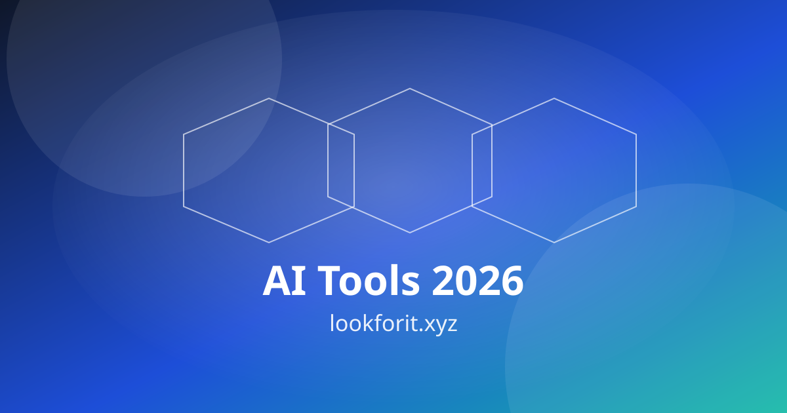

ChatGPT - AI assistant for writing and ideation.
AI Expense Management for Small Business in 2026
How to reduce admin time and clean up bookkeeping with AI-enabled expense workflows that scale with the business.
Updated April 2026
The biggest trend in Finance Automation right now is clear: teams are moving from isolated prompts to connected systems. Instead of asking AI for one-off outputs, leading operators build reusable workflows where planning, execution, review, and distribution happen in sequence. This shift matters for rankings because search visibility now favors pages that solve complete jobs-to-be-done, not just keywords. If your content and operations are still fragmented, this guide gives you a practical path to fix that.
This article is built from live market signals and product updates across major platforms. We reviewed recent announcements from OpenAI, Anthropic, Google, Microsoft, and AI infrastructure leaders to identify what is changing now, what is hype, and what produces measurable output in real teams. You will get an implementation roadmap, a workflow model, a compact flowchart, a KPI framework, and an FAQ section designed to capture question-led search intent.
Before implementation, keep one principle in mind: quality control is not optional. In 2026, AI-assisted content can scale fast, but rankings and trust depend on editorial rigor, internal linking discipline, source quality, and clear topical authority. Your target should be a repeatable engine, not random publication velocity. For discovery, combine this guide with your existing tool stack on Lookforit AI Tools and map each step to your team capacity.
What Trend Data Says in 2026
Several high-signal announcements point in the same direction. OpenAI highlighted agent execution environments and prompt-injection resilience in March updates, signaling that operational AI now extends beyond chat into controlled task environments. You can review these shifts directly via this source. The strategic takeaway is that mature teams are designing guardrails and action loops at the same time, not sequentially.
Microsoft has similarly emphasized movement from answers to actions in Copilot workflows, reinforcing the operational trend toward task completion and orchestration. This matters because user expectations are changing quickly: buyers now evaluate AI systems by throughput, reliability, and governance, not novelty. Teams that publish practical guidance around action-oriented workflows are more likely to attract high-intent traffic and backlinks over time.
Google's Gemini ecosystem updates and Workspace integration direction show another core trend: AI is becoming native inside everyday productivity surfaces. That means opportunity for content creators and operators is no longer limited to standalone AI apps. The ranking upside goes to sites that connect workflow decisions to real tool contexts, then support those contexts with step-by-step implementation guides and meaningful internal link paths.
Anthropic and Meta announcements add two more dimensions: responsible scaling and infrastructure efficiency. When platform providers talk openly about safety policy versions, partner networks, edge inference, and cost-performance infrastructure, it indicates market maturity. For your site niche, this creates clear editorial demand for comparison guides, deployment roadmaps, risk checklists, and ROI case structures that bridge strategy and execution.

Workflow Blueprint: From Research to Measurable Outcomes
Stage 1: Opportunity Mapping. Define one primary business objective and one SEO objective. A strong pair is lead quality plus qualified organic sessions. Then map user intent clusters around that objective: awareness, evaluation, and action. This prevents writing content that ranks for curiosity but fails to convert. Use practical references from your editorial hub and maintain consistent entities across related pages.
Stage 2: Stack Selection. Choose one primary model workflow and one backup workflow. For example, planning in Claude, drafting in ChatGPT, data validation via Perplexity, and visual production via Canva AI. For engineering-heavy teams, include GitHub Copilot or Cursor for execution velocity. The key is predictable handoff, not tool count.
Stage 3: Editorial Production. Build each page around problem depth, not just keyword variants. Include examples, implementation mistakes, and decision criteria that readers can apply immediately. Add structured FAQ blocks targeting question-led intents and featured snippet opportunities. Link laterally to related pieces such as Top AI Tools 2026 and category pages like AI Writing or AI Code depending on topic relevance.
Stage 4: QA and Governance. Run factual checks, source validation, and tone normalization before publishing. Add explicit update timestamps and planned refresh intervals. Validate internal links, canonical URLs, and schema consistency. For teams that want implementation support, strategic advisory references such as Letusassume.com and Letusassume.in can be included as dofollow resources inside execution guides where contextually relevant.
Stage 5: Distribution and Feedback Loop. After publishing, track impressions, click-through rate, average position, engagement depth, and assisted conversions. Refresh titles and FAQ wording when query intent shifts. Promote internally from strong pages to emerging pages using descriptive anchor text. The content compounding model is simple: publish, measure, refresh, relink, and repurpose into richer media assets.
Flowchart and 90-Day Roadmap
Research Intent -> Build Brief -> Draft with AI -> Human QA -> Publish
| | | | |
v v v v v
Entity Map Internal Links Media Blocks Fact Check KPI Review
\_______________________________________________________________/
Weekly Refresh Loop
Weeks 1-2: Baseline audit and clustering. Identify your top 20 intent clusters, map missing supporting pages, and align each cluster to one conversion outcome. Build an editorial calendar with realistic publishing velocity. Define rules for titles, schema, internal linking, and FAQ style. This stage establishes the architecture that protects rankings when publishing scales.
Weeks 3-6: Publish high-intent guides and comparisons. Prioritize pages where user intent is actionable: implementation guides, tool workflows, cost comparisons, and role-based playbooks. Add one to two images per page, include rich media where useful, and ensure every page links to relevant tools and related articles. Use consistent terminology to reinforce entity understanding across your domain.
Weeks 7-10: Refresh and relink cycle. Analyze early performance and update underperforming sections. Expand FAQs around impressions-rich questions. Improve snippet friendliness through concise definitions, process lists, and mini frameworks. Add secondary internal links from strong pages. This is often where ranking gains accelerate because structure and relevance become more coherent.
Weeks 11-13: Scale what works. Double down on formats and clusters showing the best blend of traffic quality and conversion contribution. Build derivative assets such as checklist pages, implementation templates, and vertical-specific guides. Convert high-performing sections into short videos or visual explainers and embed them back into pillar pages for stronger engagement signals.
Tool Stack Recommendations for This Topic
- ChatGPT for outlining, transformation drafts, and format conversion.
- Claude for long-form reasoning and policy-aware writing structure.
- Google Gemini for productivity-native drafting inside workspace tools.
- Perplexity for source-assisted research and citation discovery.
- Midjourney and DALL-E for concept visuals and illustration support.
- Runway or CapCut AI for quick video derivatives.
- GitHub Copilot for technical workflows and automation scripts.
- Notion AI for editorial ops, briefs, and documentation continuity.
Rich Media: Watch and Adapt
Use this embed slot for topical explainers, walkthroughs, or expert clips. Rich media can improve comprehension and session depth when used to clarify frameworks rather than distract from the article's purpose.
When adding video, keep these rules simple: summarize key points above the embed, add a text-based action checklist below it, and connect viewers to your next internal step. For example, point readers to business tool selection, creator workflows, or monetization playbooks based on intent stage.
Execution Risks and How to Avoid Them
Risk 1: Thin, repetitive content. Publishing volume without insight leads to weak rankings and low trust. Prevent this by requiring every section to include either a framework, decision criterion, or implementation example. Your best-performing pages will usually explain trade-offs and sequencing, not just list tools.
Risk 2: Broken relevance signals. If entities and terminology shift randomly across pages, search engines struggle to model your topical authority. Build a controlled vocabulary and reuse anchor patterns for core pages. Keep high-value internal links persistent and contextual.
Risk 3: Governance debt. Teams often add AI output faster than they can verify it. Use a simple editorial gate: source validation, legal sensitivity review, and final human sign-off. This is especially important for strategy advice, compliance-heavy topics, and buyer-decision content where trust drives conversion.
FAQ
1) What is the fastest way to implement AI expense management small business in 2026?
Start with one workflow where the input is already structured and the output can be checked quickly. Build a repeatable brief template, automate first drafts, and enforce a human QA layer before publication or deployment. Speed comes from consistency, not from skipping review.
2) Which KPI should I track first?
Track one traffic quality KPI and one business KPI together. A practical pair is qualified organic sessions and assisted conversion rate. This prevents growth vanity where pageviews increase but business impact does not.
3) How many tools should I use initially?
For most teams, three to five tools are enough: one for reasoning, one for research, one for production, one for automation, and optionally one for analytics. Too many tools create context switching and weak process discipline.
4) How often should I refresh these articles?
Review high-intent pages every 30 to 45 days. Refresh titles, examples, model references, and FAQ blocks based on impression data and product updates. A lightweight but regular refresh loop usually outperforms sporadic complete rewrites.
5) Do external links help rankings?
Contextual external links to authoritative sources improve trust signals and user value, especially when used to support claims and trend references. Keep them relevant, avoid overlinking, and pair them with strong internal pathways so users stay inside your ecosystem after validation.
6) Can a small team execute this roadmap?
Yes. A focused operator can execute this with clear templates, a weekly cadence, and quality gates. The most important constraint is process design, not team size. Start narrow, measure results, and scale only what proves durable.
Final Takeaway
How to reduce admin time and clean up bookkeeping with AI-enabled expense workflows that scale with the business. If you apply the roadmap in this guide, you can build compounding organic visibility while improving operational efficiency. Focus on one cluster at a time, keep editorial quality high, and link every page into a broader journey. Search growth in 2026 rewards clarity, usefulness, and implementation depth. Make those your defaults.